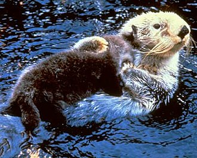

| 海獺 | |  |

生物介紹：
海獺（學名：Enhydra lutris）是食肉目動物中最適應海中生活的物種，很少在陸地或冰上覓食，大半的時間都待在水裡，連生產與育幼也都在水中進行。大部分時間裡，海獺不是仰躺著浮在水面上，就是潛入海床覓食。當牠們待在海面時，幾乎一直在整理毛皮，保持它的清潔與防水性。海獺棲息於多種海岸棲地，其範圍由岸石海底和海岸線至沙或泥質的海底。多生活於水深40公尺以內的範圍，但經常會移動至更深的海域以覓食或進行季節性的移動。
分布：
海獺分布於北太平洋近岸水域，由日本北部至堪察加半島沿岸，往東經阿留申群島與阿拉斯加灣南岸，沿北美太平洋海岸至下加利福尼亞。科學家已辨識出三個不同的亞種，其中之一位於美國的加州，另二者皆位於阿拉斯加。在加州的海獺族群又被稱為南方海獺或加州海獺，阿拉斯加族群則被稱為阿拉斯加海獺。
原因：
在1741年商業捕獵開始以前，海獺的分布相當廣泛，估計當時的數量約在150,000至300,000隻之間。直到1911年由美國、日本、俄羅斯、與英國協議通過國際協定禁止捕捉海獺時，海獺的數量已經減少到只剩下數千隻。在大部分區域海獺皆回復良好，但到了1990至2000年間因不明原因而造成數個族群的數量減少。牠們的危機在於本身為小族群，加上受到漁網與加州中部海岸的原油外洩汙染等威脅。
保育：
1911年由美國、日本、俄羅斯、與英國協議通過國際協定禁止捕捉海獺。在美國瀕臨絕種動物條例（U.S. Endangered Species Act）中被列為「受威脅種」，而在1977年的海洋哺乳類保護條例（Marine Mammal Protection Act）中列為「枯竭種」。在1980年代於加州南部曾有重建加州海獺族群的計畫，但復育後野放的海獺不是回到中部加州的原居地，就是死於人為因素或失蹤。